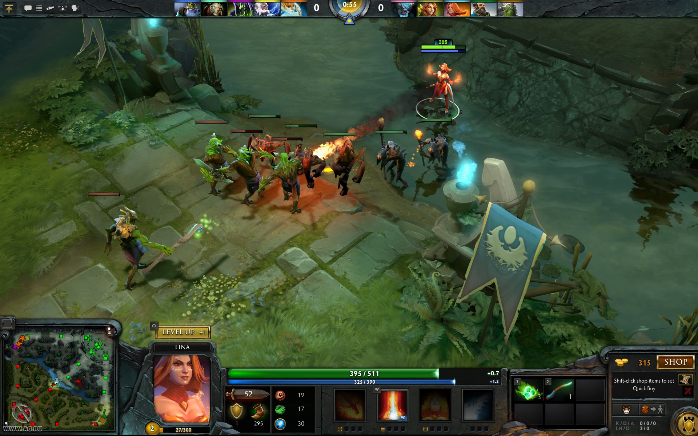

Сообщество
Тут вы узнаете об популярных играх на просторах интернета .
Что такое Dota 2 и как в нее играть?
Если спросить профессионального шахматиста, как он может играть тысячи партий на одной и той же карте, с одними и теми же фигурами и необновляющимися возможностями и при этом не заскучать, он, наверное, усмехнется, попросит вас подрасти и немного глубже ознакомиться с содержанием и ценностью этой игры.
Конечно, содержательно Dota 2 не имеет с шахматами ничего общего. Тем не менее их роднит очень многое: обе спортивные дисциплины предлагают здоровую пищу для ума, требуют от игрока опыта, серьезнейшего тактического анализа и способности на много ходов вперед предсказывать развитие событий. К сожалению, в общественном мнении Dota не только лишена этих достоинств, но и представляется воплощением порока, зла и самого Сатаны.
Когда шахматист днями напролет разыгрывает сотни партий и изучает тонны литературы, это называют профессиональной усидчивостью. Когда тем же самым занимается «дотер» — «задротством». Вышедшая в 2003-м году карта-модификация для WarCraft 3 Defense of the Ancients разбила геймерское сообщество на два непримиримых лагеря. Для одних «дота» стала вершиной эволюции игропрома и образом жизни. Другие смотрят на нее как на обитель пошлости и безвкусицы, «Дом-2» игрового мира. Но кто бы что ни говорил, Dota стала одной из главнейших киберспортивных дисциплин, являясь придатком WarCraft 3. Вопрос ее переквалификации в самостоятельную игру был решен совсем недавно.
Интересно знать!
КАК ВЫИГРАТЬ КАЖДЫЙ СПОР У ДЖОНА
По мере прохождения многочисленных расследований в Sherlock Holmes Chapter One, связанных с убийствами, воровством и всевозможными преступлениями, напарник Шерлока, воображаемый Джон будет стараться всеми силами поднять настроение Холмсу.
DEATHLOOP: КАК ПОЛУЧИТЬ ВСЕ ОРУЖИЕ
Оружие в Deathloop бывает четырех уровней редкости (если честно, у меня вылетело из головы, но я действительно не помню, чтобы в игре были предметы «зеленой» редкости) – серое, синее, фиолетовое и золотое. К числу последних относятся четыре уникальные пушки.
HUMANKIND: КАК ПОВЫСИТЬ СЛАВУ (ГАЙД)
Интересно, как заработать славу в Humankind? Одна из уникальных особенностей новой 4X-стратегии от Amplitude – способ, которым вы можете одержать победу в игре. Конечно, можно пойти классическим вариантом, сделав всех своими вассалами.